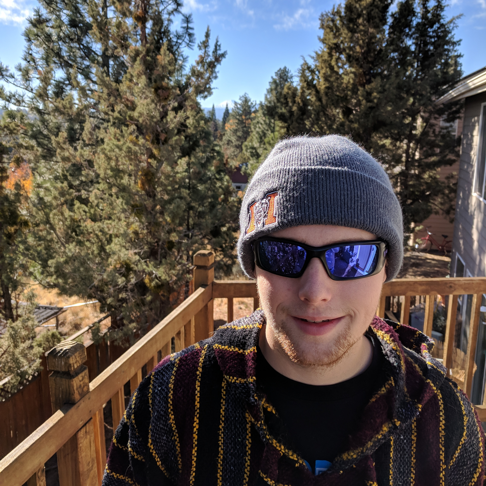
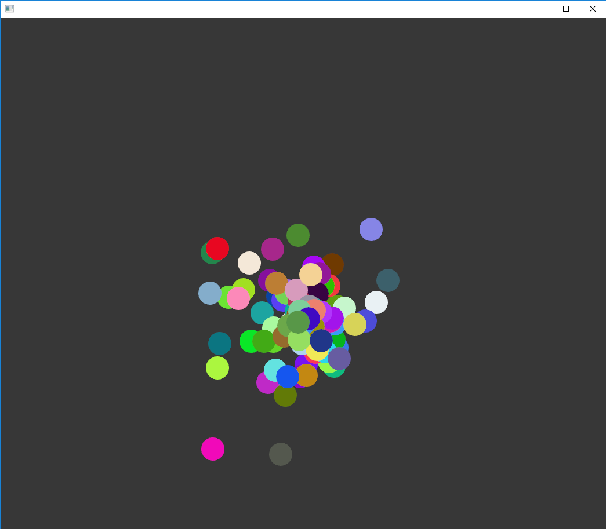

Tyler Nielsen
Writer, Programmer,
& Former Toddler

Who is this fool?
I am an English and Computer Science major at OSU-Cascades.
Career Aspirations: Secondary Education - Game Developement
Titles and Affiliations:
-Cascades Writing Guild - President, Founder (2017)
-Central Oregon Writer's Guild
Resume:
Publications:
Nielsen, T. C. "Fool's Gold." The Dulcimer, edited by Teal St. Nicklaus, Volume L, Mercer University, 2017, pp. 48-49.
Programs:
Drunkard's Walk
My flagship project was a simulation to demonstrate the effects of Brownian motion using Visual Studio.
Zombulator Simulation

The "Zombulator" project built upon concepts demonstrated in "Drunkard's Walk. It incorporated biased random motion, conditional interaction between objects, and improved graphical features.
Simulation | Sourcecode